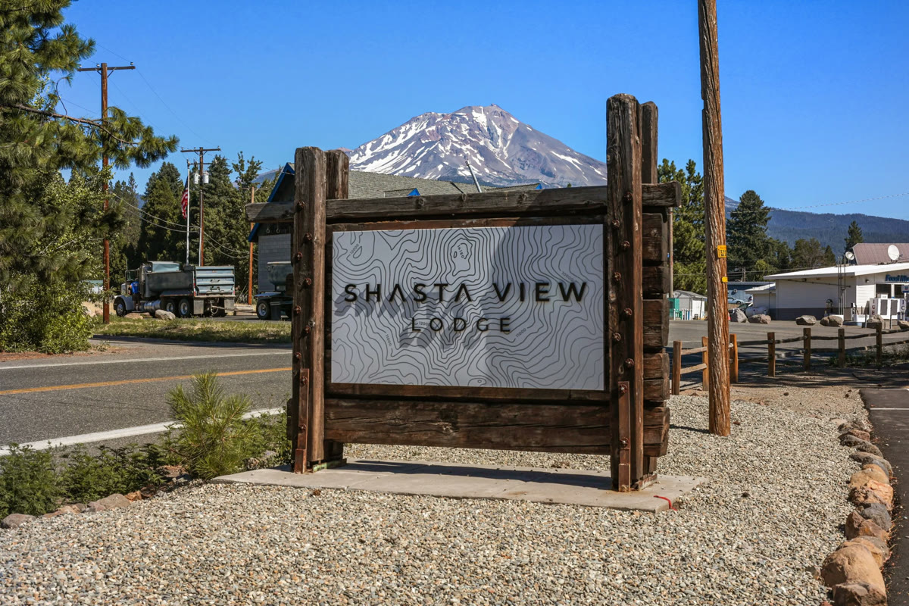
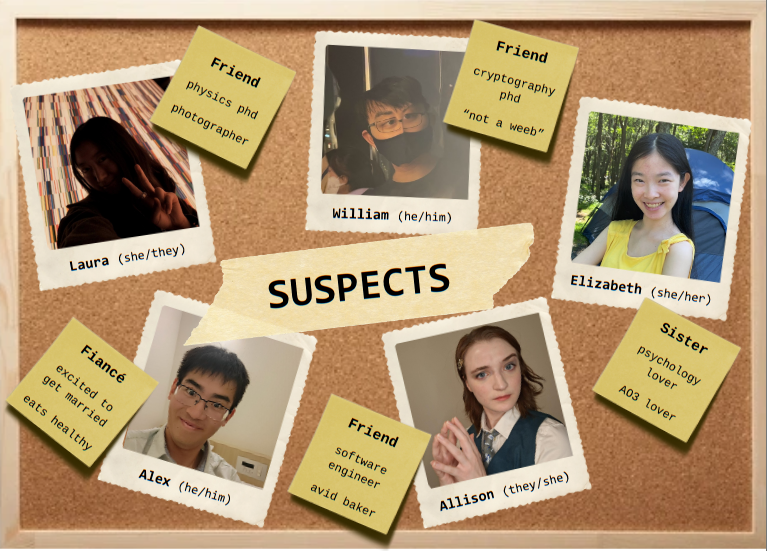

Sunday
4:00 PM · Shasta View Lodge
Check-in
If you're staying with us, get settled in your cabin. Everyone is welcome to explore the lodge :D

6:00 PM · Shasta View Patio
Welcome Dinner
A Thai feast, catered by Phuket Thai Café
7:30 PM · Cedar Cabin
Murder Mystery
Oh no, a murder! Use your five senses and your big brains to piece together the evidence. Top teams win a mystery prize.
